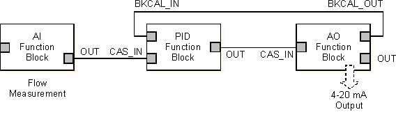
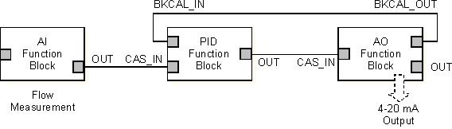

Analog Output function block application information
The way you configure an Analog Output function block and its associated input and output channels and parameters depends on whether it has been assigned to a fieldbus device and whether the field device requires a traditional 4 to 20 mA input, a 4 to 20 mA input using HART Communications Protocol, or a discrete pulse duration input.
AO block assigned to a Fieldbus valve
If a fieldbus valve loses air, or a fieldbus valve positioner loses power, the valve will either go fully open or fully closed. This state is determined by the valve itself and is often termed its shelf position or air fail position. This state is different from the Fault State parameter (FSTATE_VAL) of the Analog Output function block when it is assigned to a fieldbus valve.
By default the Analog Output function block's FSTATE_VAL and FSTATE_TIME parameters are set to 0. This causes the block to hold the last value when communication on the fieldbus is lost. It is highly recommended that you configure the FSTATE_VAL parameter to correctly set the valve position if fieldbus communications to the valve cease for the time period that you configure with the FSTATE_TIME parameter.
The FSTATE_VAL and FSTATE_TIME parameters only appear in the parameter list after the block has been assigned to a fieldbus device.
Limit write requests to static or non-volatile parameters
It is recommended that you limit the number of periodic writes to all static or non-volatile parameters, such as HI_HI_LIM, LOW_CUT, SP, TRACK_IN_D, OUT, IO_OPTS, BIAS, STATUS_OPTS, SP_HI_LIM, and so on. Static parameter writes increment the static revision counter, ST_REV, and are written to the device's non-volatile memory. Fieldbus devices have a non-volatile memory write limit. If a static or non-volatile parameter is configured to be written periodically, the device can stop its normal operation after it reaches its limit or fail to accept new values. Consult the device documentation to determine if a parameter is static or non-volatile.
Another way to configure your system to avoid burning out non-volatile memory is to link a CALC block or PID block running in the controller to the AO block running in the device. This method avoids the use of asynchronous writes by writing to the AO block through a publisher/subscriber mechanism.
To link a CALC block to the AO block:
Set the AO block mode to CAS, AUTO, or MAN.
Link the CALC block's OUT parameter to the AO block's CAS_IN parameter.
To link a PID block to the AO block:
Set the AO block mode to CAS, AUTO, or MAN.
Link the PID block's OUT parameter to the AO block's CAS_IN parameter.
Link the AO block's BKCAL_OUT parameter to the PID block's BKCAL_IN parameter.
Set the PID parameter CONTROL_OPTS to Track Enable.
Write a value to the AO block using the TRK_IN_D and TRK_VAL parameters.
Actuator requiring traditional 4 to 20 mA input
Channel type: Analog Output Channel
Analog Output block IO_OUT parameter: Select OUT.
Analog Output block IO_READBACK parameter: Select FIELD_VAL_PCT when the input is 4 to 20 mA.
Analog Output block PV_SCALE parameter: Set the range and engineering units to values that correspond to the Analog Output block's 4 to 20 mA output. In many cases, PV_SCALE is set to 0 — 100%.
Analog Output block IO_OPTS parameter: Select Increase to Close when the actuator is designed to fail open.
If you are using the CAS_IN connector wired from another block, the Analog Output block's BKCAL_OUT parameter should be wired to the other block's BKCAL_IN parameter.
Application example: actuator requiring traditional 4 to 20 mA input
Assume a regulating valve equipped with an air-operated actuator interfaces to the analog output channel through an I/P transducer that requires 4 to 20 mA input. The Analog Output (AO) function block is used with an Analog Input (AI) function block and a PID function block to control flow in a pipe. The configuration differs depending on whether the valve actuator with the I/P transducer is designed to allow the valve to fail closed or to fail open on the loss of the 4 to 20 mA signal. The following table shows configuration settings for each of these cases.
|
Configuration Setting |
Fail Close |
Fail Open |
|---|---|---|
|
Channel Type |
Analog Output |
Analog Output |
|
IO_OUT |
OUT |
OUT |
|
PV_SCALE |
0 to 100% |
0 to 100% |
|
IO_OPTS Increase to Close |
Not selected |
Selected |
The following diagram is the function block diagram for this example.

Actuator requiring HART communications protocol 4 to 20 mA input
Channel type: HART Analog Output Channel
Analog Output block IO_OUT parameter: Select OUT.
Analog Output block IO_READBACK parameter: Select the HART device or dynamic variable that holds the desired value. Define the available variables through the DeltaV Explorer.
Analog Output block PV_SCALE parameter: Set the range and engineering units to values that correspond to the Analog Output block's 4 to 20 mA output. In many cases, PV_SCALE is set to 0 — 100%.
Analog Output block XD_SCALE parameter: Set the range and engineering units to values that correspond to PV_SCALE. Set the engineering units to match those appropriate to the field device.
Analog Output block IO_OPTS parameter: Select Increase to Close when the actuator is designed to fail open.
If you are using the CAS_IN connector wired from another block, the Analog Output block's BKCAL_OUT parameter should be wired to the other block's BKCAL_IN parameter.
Application example: actuator requiring 4 to 20 mA input using HART communications protocol
Assume a regulating valve and actuator that communicates using the HART Communications Protocol interfaces to the analog output channel. The Analog Output (AO) function block is used with an Analog Input (AI) function block and a PID function block to control flow in a pipe. The configuration differs depending on whether the valve actuator with the I/P transducer is designed to allow the valve to fail closed or to fail open on the loss of the 4 to 20 mA signal. The following table shows configuration settings for each of these cases.
|
Configuration Setting |
Fail Close |
Fail Open |
|---|---|---|
|
Channel Type |
HART Analog Output |
HART Analog Output |
|
IO_OUT |
OUT |
OUT |
|
PV_SCALE |
0 to 100% |
0 to 100% |
|
IO_OPTS Increase to Close |
Not selected |
Selected |
The following diagram is the function block diagram for this example:

Field device requiring discrete pulse duration input
Channel type: Continuous Pulse Output Channel. Define the PULSE_PERIOD (in seconds) equal to the AO block execution period. Note that PULSE_PERIOD will probably be different than the module scan rate.
Analog Output block IO_OUT parameter: Select ON_TIME.
Analog Output block IO_READBACK parameter: Select FIELD_VAL_PCT when the input is 4 to 20mA. (Refer to the Analog Input function block information for HART input options.)
Analog Output block PV_SCALE parameter: Set the range and engineering units to the values that correspond to the Analog Output block's output. In many cases, PV_SCALE is set to 0 — 100%.
Analog Output block IO_OPTS parameter: Do not select Increase to Close.
When the Analog Output function block is used for pulse duration output through a discrete channel, the OUT value (in percent) is used to determine the time on during the defined pulse period. For example, when OUT = 50%, the discrete output channel is turned on for 50% of the defined PULSE_PERIOD. The discrete output is turned on by the discrete card and is accurate to within 2 msec of the value determined by OUT and PULSE_PERIOD.
Application example:Field device requiring pulse duration input
Assume a heater band on an extruder interfaces to the discrete output channel through a contactor that requires a pulse duration discrete input. The Analog Output (AO) function block is used with an Analog Input (AI) function block and a PID function block to control temperature by regulating duty cycle (percent time on).
In this example the PULSE_PERIOD is set to 10 seconds. The scan rate of the module should be faster than this to achieve better temperature control and satisfy the update requirements of the operator screen. But the AO function block in the module needs to execute at the same rate as the PULSE_PERIOD. The module scan rate in this example is two (2) seconds. The AO block scan multiplier should be set to five (5) so that the block skips module execution scans and executes at the same rate as the PULSE_PERIOD.
With continuous heat applied (100% duty cycle), the energy input is 50 kW. The configuration differs depending on whether the AO block setpoint is to be set in kW or in percent energy input. The following table shows configuration settings for each of these cases.
|
Configuration Setting |
Setpoint in Percent |
Setpoint in kW |
|---|---|---|
|
Channel Type |
Continuous Pulse Output, 10 sec |
Continuous Pulse Output, 10 sec |
|
AO Block IO_OUT Parameter |
ON_TIME |
ON_TIME |
|
PV_SCALE |
0 to 100% |
0 to 50 kW |
|
IO_OPT Increase to Close |
Not selected |
Not selected |
The following figure is the function block diagram for this example: